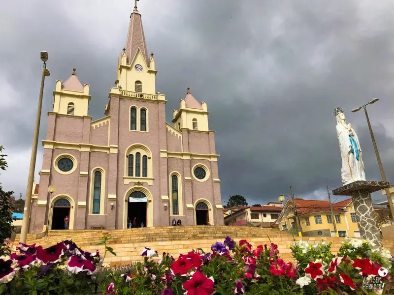
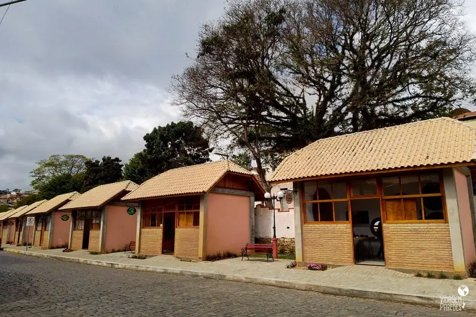

POSTAGEM 1
2024

Maria da Fé é uma cidade localizada no estado de Minas Gerais, conhecida por sua beleza natural e clima agradável. Rodeada por montanhas e paisagens deslumbrantes, a cidade oferece diversas opções de ecoturismo e atividades ao ar livre. Suas ruas tranquilas e arquitetura colonial proporcionam um ambiente acolhedor e charmoso para os visitantes.
Leia Mais...
POSTAGEM 2
2024

é conhecida por suas baixas temperaturas durante o inverno, sendo considerada a cidade mais fria do estado. Um marco histórico nesse sentido foi a marca de -8,4 ºC registrada em 21 de julho de 1981, evidenciando o rigoroso clima frio que a cidade enfrenta.
Apesar das temperaturas baixas, a paisagem de Maria da Fé durante o frio é verdadeiramente deslumbrante. As montanhas cobertas de neblina, os campos gelados e a atmosfera tranquila criam um cenário de beleza única e serenidade. Os turistas que visitam a cidade durante o inverno têm a oportunidade de apreciar essa paisagem encantadora e vivenciar a experiência de estar em um dos lugares mais frios de Minas Gerais.
Portanto, convido os amantes do frio e da natureza a explorarem Maria da Fé durante a estação mais gelada do ano, apreciando não apenas a marca histórica de -8,4 ºC, mas também a beleza cênica e a atmosfera única que tornam essa cidade um destino especial para os que buscam experiências autênticas e memoráveis.
Leia Mais...
POSTAGEM 3
2024

A Igreja de Maria da Fé é uma bela e significativa construção religiosa localizada na cidade de Maria da Fé. Com sua arquitetura impressionante e rica história, a igreja é um marco importante na cidade, representando a fé e a devoção da comunidade local.
Para os turistas que visitam Maria da Fé, a Igreja de Maria da Fé é um local imperdível para explorar e apreciar. Além de sua beleza arquitetônica, a igreja oferece aos visitantes a oportunidade de mergulhar na cultura e na espiritualidade da região.
Convido calorosamente os turistas a visitarem a Igreja de Maria da Fé e experimentarem a serenidade e a beleza deste local sagrado. Que sua visita seja enriquecedora e inspiradora, proporcionando uma conexão única com a história e a espiritualidade da cidade de Maria da Fé.
Leia Mais...
POSTAGEM 4
2024

Maria da Fé é uma cidade localizada no estado de Minas Gerais, conhecida por sua beleza natural e clima agradável. Rodeada por montanhas e paisagens deslumbrantes, a cidade oferece diversas opções de ecoturismo e atividades ao ar livre. Suas ruas tranquilas e arquitetura colonial proporcionam um ambiente acolhedor e charmoso para os visitantes.
Leia Mais...
.jpg){kind=link}